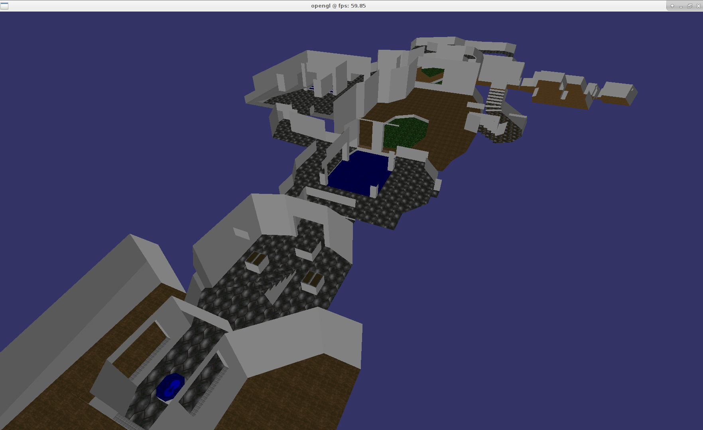
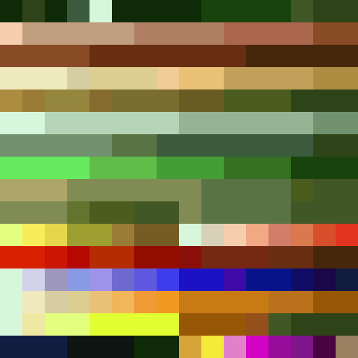
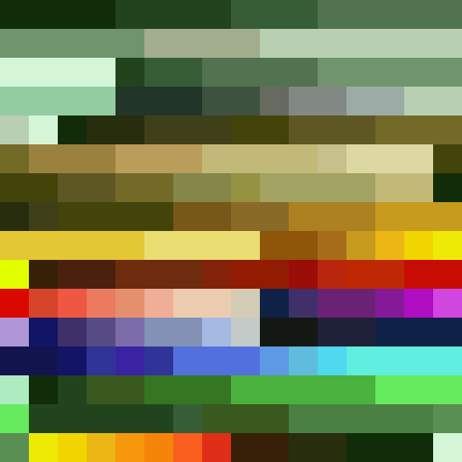

A hobby project that has been on my list since about 1994 was to figure out Doom's (Id Software, 1993) data file format - the vaunted DOOM.WAD file. My brother and I used to enjoy making maps with 3rd-party editing tools around 1994/5, which was a nice way to get a grip on the 3D technology involved in the game. When I started programming I occasionally looked at the Doom source code to see if I was at a level where I could have understood or made some of it. It took me many years. I tested my mettle a few years ago porting Doom - see this blog post, but left figuring out the WAD file for a future code expedition. There it remained. But something happened that the WAD did not intend. It was picked up by the most unlikely creature imaginable...
I was coding late one night and thought "Hmm, it would be nice to play the original Doom music while I code".. Nothing on Youtube is the same, original "MIDI playing on an original Soundblaster" sound that I [lying] told myself I remembered differently. So I thought "Well, I have Doom, why don't I just pull the music out of the game data directly?" Thus, my tale begins. This will probably be a series of posts. Aside: Look, if you don't know me, then what I'm like is I'll intend to do one little thing and then I'll get completely obsessed, and binge code on the heavy metal for several days without sleeping (record code binge 38 hours, but that's another story), and it will get completely out of hand until a friend slaps me back to reality, which happened in this case. Guilty your Honour!
The WAD is a binary file with a custom layout that smushes together all of the game's data assets - images, sounds, music. There are two types of WAD - the main IWAD (Id software WAD I guess), and PWAD - patch WAD. This allows players to make a little third-party custom add on like their own map, that overwrites one of the game's maps at start-up so that they can play it. We made PWADs of our own maps in 1994. I probably still have them on a mouldering floppy disk in New Zealand, but I couldn't find them last time I was there, sadly.
Unlike plain-text files, binary files are a little tricky to read because you can't just open them in a text editor and see the data. You can open them in a hex-editor though and inspect the value of each byte of data. Hex editors display each byte as a two-digit hexadecimal number. A byte can store 256 combinations, so e.g. the numbers 0-255, or representing an ASCII character from that numbered set of 128 characters 'a' (value 97), 'B', etc. Hexadecimal represents 16 values per digit, rather than decimal 10 - so 0,1,2,3,4,5,6,7,8,9,A,B,C,D,E,F, where "F" corresponds to decimal 15. Hex is used because you only need 2 digits/characters to display each byte of data, thus 255 in decimal is rendered as "FF" in hex. If you've ever edited a web-page you may have seen colours expressed in hex like 0xFFFFFF. That's actually 3 bytes, one after the other, not one huge number. One for red, one for green, and one for the blue component of the colour, respectively. If all are set to 255 or FF then you get white, as we would here. 0xFF0000 would be bright red.
I use hexedit on GNU/Linux from the terminal. I wanted to go in cold and see if I could figure everything out myself with no starter information. People have done this many times over the years, and I didn't want them to spoil the challenge for me (horrifying and shameful discovery about this later). The first task in inspecting a binary file in a hex-editor is to find some strings of ASCII text. Usually you have a column on the right-hand side that shows what the ASCII characters are or would be for each byte's value. In this way you can scan for some named sections in the file, which is a nice hint. By the way, never encode anything in a string if it's meant to be kept secret or safe, even in a compiled program - these will show up here.
[hexedit shot of strings and data here]Explain basic ideas of structuring binary files here. Paragraph explaining dictionary/digest at the file footer here.
TODO Explain concept behind colour palettes.

